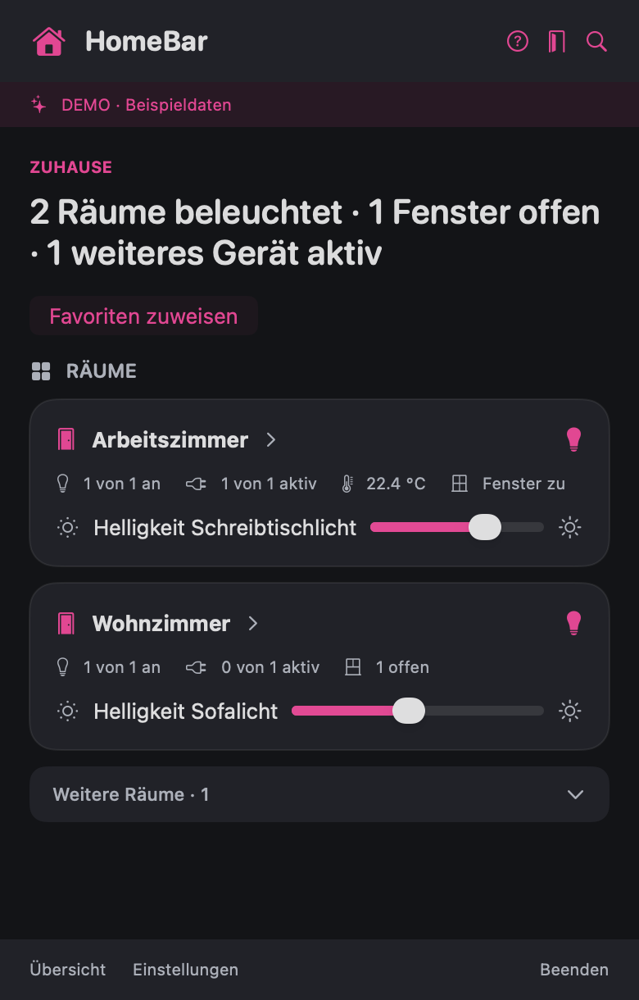
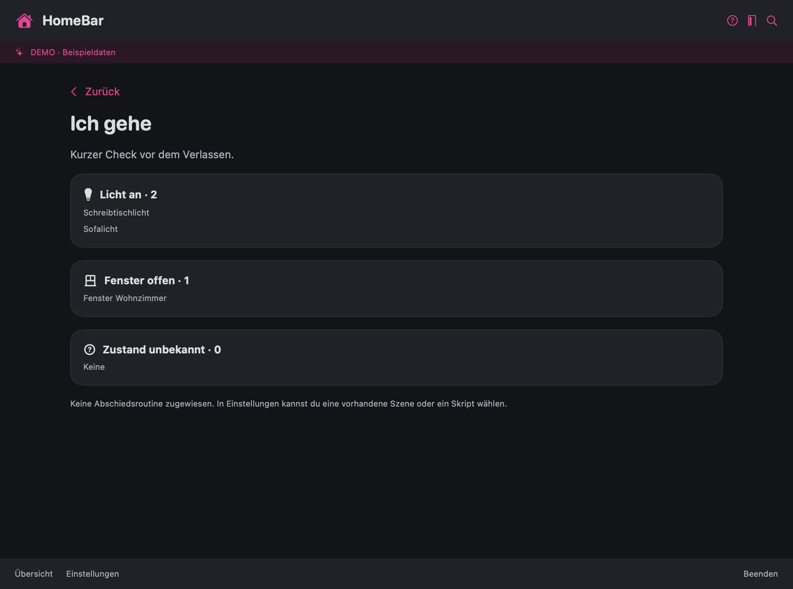

Hausstatus
Sieh auf einen Blick beleuchtete Räume, offene Fenster und aktive Geräte.
Kostenlose App für macOS 26 und neuer
HomeBar bringt dein vorhandenes Home Assistant direkt in die Menüleiste. Sieh, was zu Hause los ist, steuere Licht und öffne deine wichtigsten Räume, ohne den Browser aufzurufen.
Version 1 in geschlossener Beta · Noch keine offene Beta

App-Vorschau mit BeispieldatenWas HomeBar kann
Die wichtigsten Informationen und Aktionen sind dort, wo du sie schnell erreichst: in der Menüleiste.
Sieh auf einen Blick beleuchtete Räume, offene Fenster und aktive Geräte.
Öffne Raumdetails und schalte oder dimme unterstützte Leuchten direkt in HomeBar.
Finde Räume, Geräte, Szenen und Skripte. Lege häufig genutzte Aktionen als Favoriten ab.
Prüfe vor dem Verlassen eingeschaltete Lichter und offene oder unbekannte Fensterzustände.
Einblicke in die App
Diese Ansichten stammen direkt aus dem Demo-Modus der App und enthalten ausschließlich Beispieldaten.



Geschlossene Beta
Version 1 ist in der Beta-Phase. Wenn du HomeBar ausprobieren möchtest, schreib uns gern. Wir vergeben Testzugänge persönlich; eine offene Beta gibt es noch nicht.